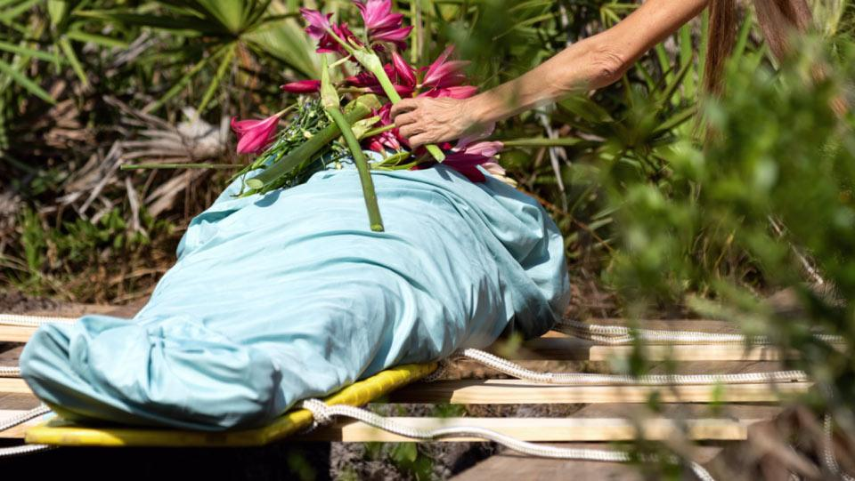

Burial Methods
Casket
Eco-coffins
Shroud

Tree pod
MARKER OPTIONS
This is a wooden cross used for memorial purposes.
This is engraved stone marker for natural burial.
This is a standing wooden plaque for natural burial.
This is a wooden board pinned at tree for identification.